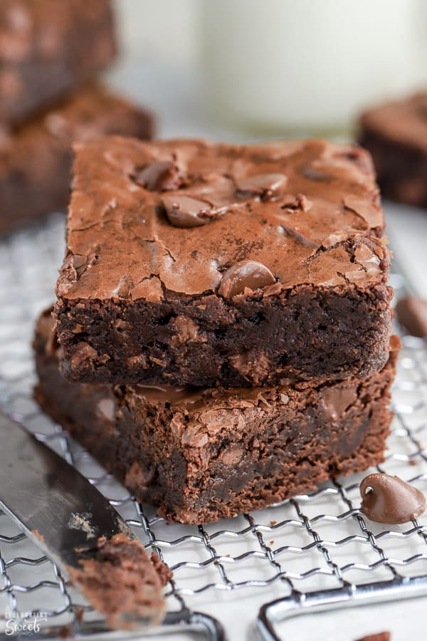

Brownies

The search is over. This is the PERFECT brownie
I don't know if most Americans realize it, but brownies are the quintessential American dessert.
Brownies are simple and indulgent. They can be made and enjoyed any time of year. And when you are craving a brownie,
there is nothing else that can satisfy that craving.
A couple of seasons ago, The Great British Bake Off had an American episode where the contestants
had to make brownies. I think I yelled at my tv the whole time.
Everyone was talking about what makes the best brownie, and from what I saw, they had no idea.
The best brownie is equal parts fudgy and cakey. They are dense but somehow easy to eat.
This recipe is, honestly, the perfect brownie recipe. I have worked in a few bakeries, and I always come back to this
recipe. Feel free to cut this recipe in half or even into quarters, but you'll be kicking yourself
for not making the whole batch. You can always freeze what you don't eat.
Ingredients
- 1 lb. Unsalted Butter
- 1 lb. Semi Sweet Chocolate Chips
- 1 TBSP + 2 tsp Espresso Powder
- 7 lrg Eggs
- 2 TBSP Pure Vanilla Extract
- 3 cups Sugar
- 1 1/4 cup AP Flour
- 1 TBSP Baking Powder
- 1 tsp Salt
- 3 cups Walnut pieces, optional
- 2 cups Dark Chocolate Chips
- 3/4 cups Ganache, soft
Steps
- Pre-heat your oven to 350 degrees F (or 315 degrees F for convection ovens)
- In a large bowl, combine the butter, semi sweet chocolate chips, and espresso powder. Using a double boiler method, melt and whisk the ingredients together. Let this cool slightly.
- In another bowl, whisk the eggs first then add the sugar, then the vanilla to combine. Once these are combined, fold the mixture into the chocolate mixture above.
- In another bowl, whisk together 1 cup of flour, the baking powder, and the salt). Once combined, fold into the chocolate mixture.
- Using the dry ingredients bowl, mix together the rest of the flour (1/4 cup), the walnut pieces (if using), the dark chocolate chips. Fold this mixture and the softened ganache to the chocolate batter.
- Prepare your pan. Using a standard cookie sheet, place a piece of baking parchment on the bottom. Add the cookie sheet extenders, and either butter the inside or use a cooking spray on the inside of the pan extenders.
- Pour in the brownie batter. Using an offset spatula or a cake scrapper, try to level out the top of the batter the best you can.
- Bake for 30-35 minutes, turning the pan halfway through the baking time. Do not over bake!
Home